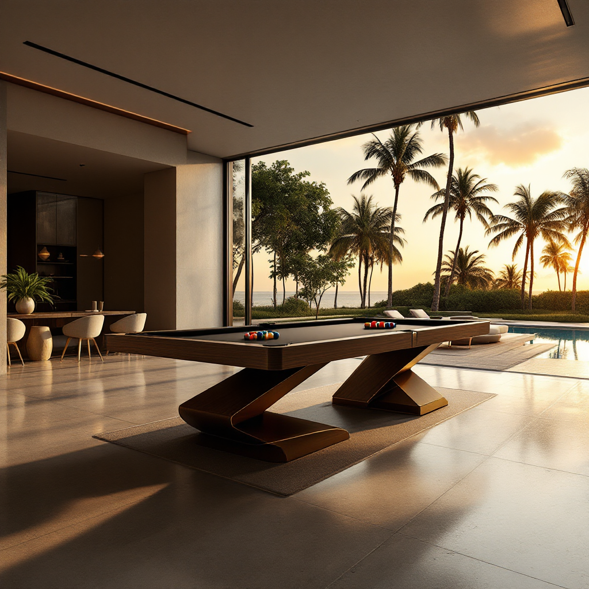
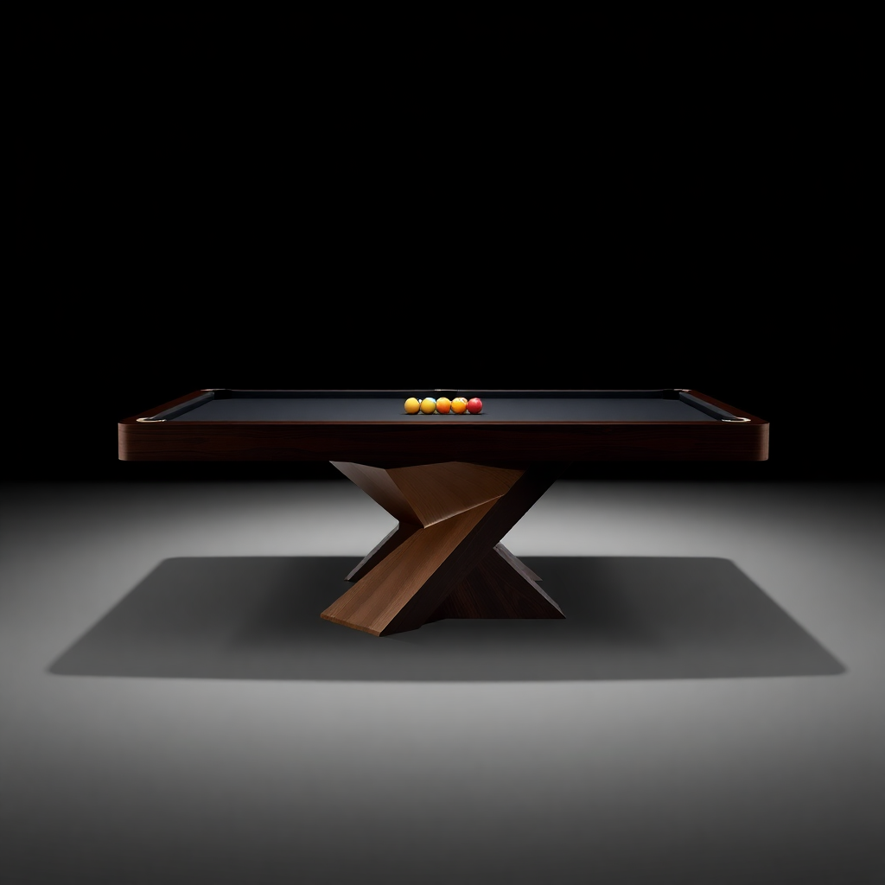
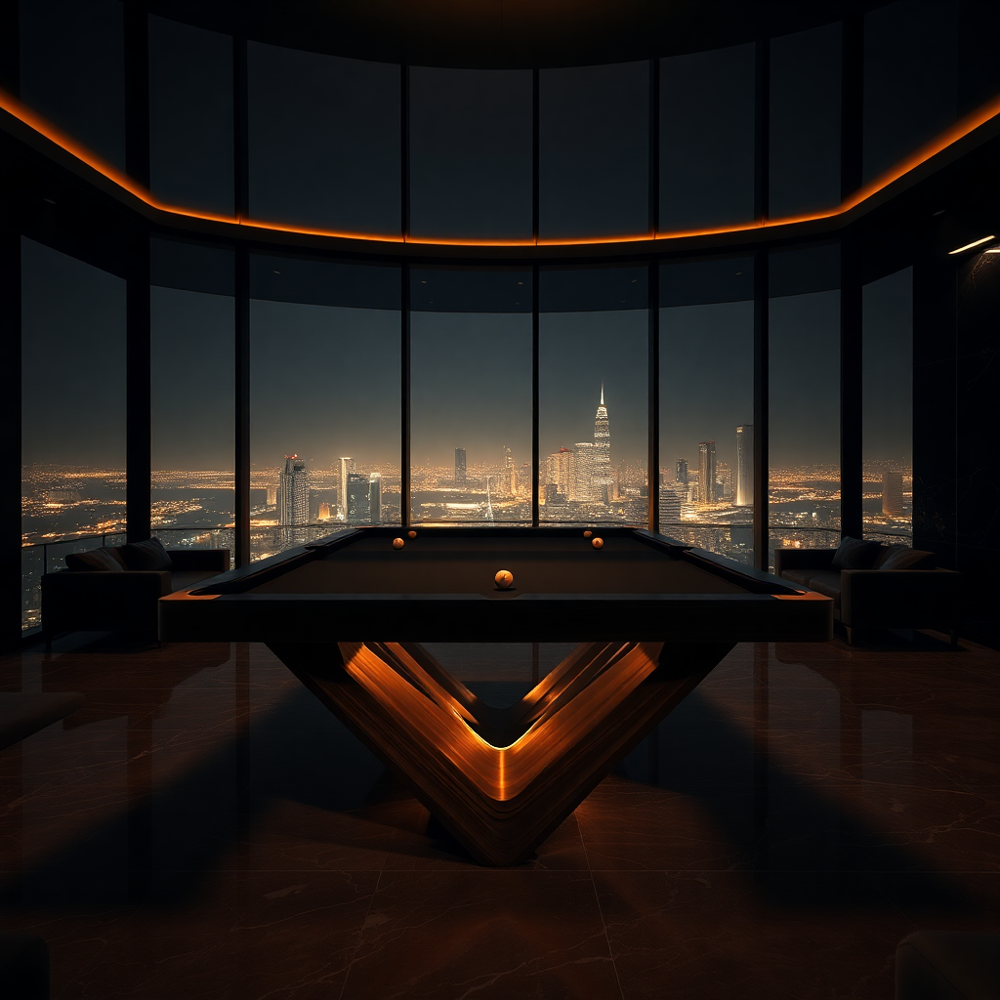
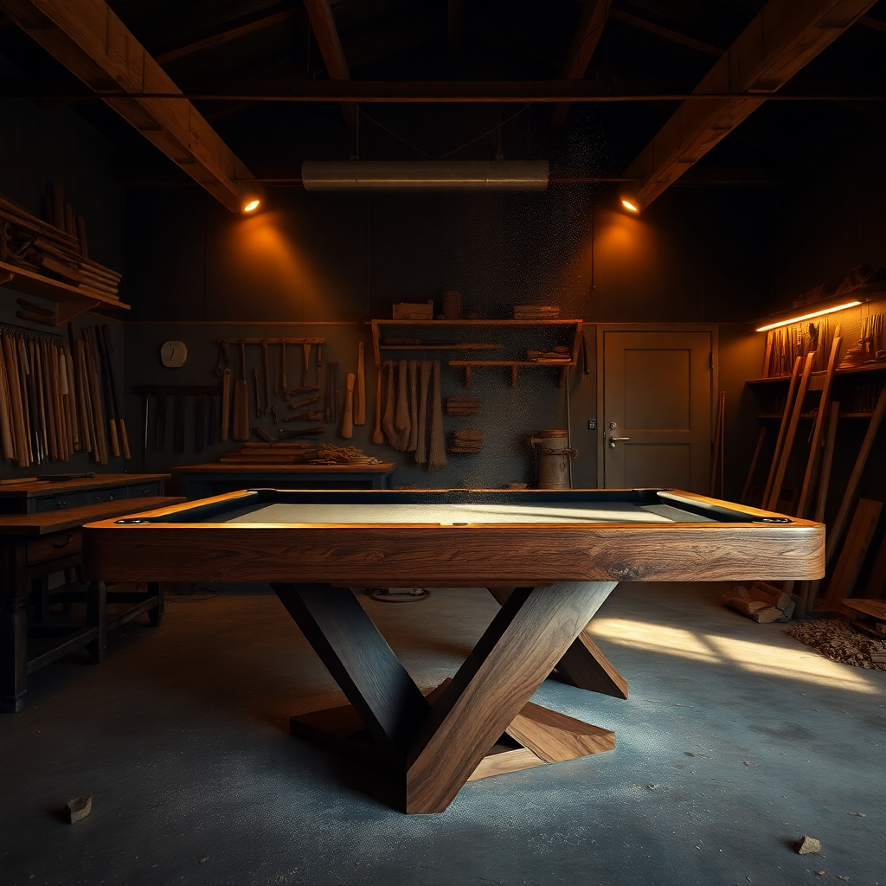
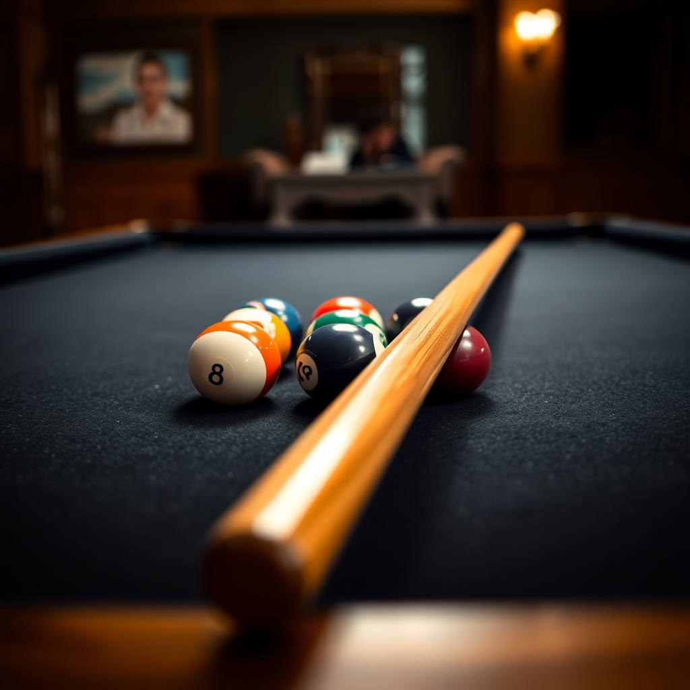

Três tratamentos para o primeiro viewport. Mesma legenda, mesmo CTA, atmosferas distintas. Escolha um.
JPG lifestyle ambiente real. Gradient sussurro canvas/40. Caption bottom-left, CTA bottom-right.
Funciona quando há foto de showroom luxuoso disponível. Atmosfera Cassina/B&B Italia. Risco: depende da qualidade do JPG; o produto pode ler como "decoração" e não "objeto".
PNG isolado em fundo quase-preto, spotlight champagne radial, peça flutuante centralizada.
Atmosfera Ferrari museum, 11 Ravens, Bugatti. O objeto é o argumento — sem competir com decoração de sala. Risco: pode ler como "showroom de SaaS premium" se não tiver textura cinematográfica suficiente.
Vídeo cinematográfico autoplay loop muted. 60s, golden hour, mansão real. Caption + CTA mantém a discrição editorial.
Padrão 11 Ravens, Bugatti, Hermès Maison. Maior leverage de luxo — mas requer produção de vídeo real (custo + tempo Sprint 2). Variant A serve como ponte até o vídeo ficar pronto.
Marque a sua escolha em DECISIONS.md — secção Hero, item "Hero variant preference".
Conceitos cinematográficos AI da Opal em diferentes ambientes. Use estas como referência de mood e composição para a produção real (3D-render-stills + AI environment compositing).

Modernist mansion + palmeiras + infinity pool. Z-base visível. Captura o lifestyle target perfeitamente.

Z-base mais fiel. Top-light dramático, museum piece feel. Ferrari pre-2023 reference exata.

Mood São Paulo nighttime. Base AI-rendered fica triangular, não Z. Atmosfera ok, fidelidade do produto comprometida.

Mood marcenaria, dust particles. Base saiu retangular, perdeu o Z. Útil pra banda Atelier, não pro hero.

Detalhe macro pra usar entre seções como "money shot" textural. Bokeh dramático, golden warm.
AI lutou pra replicar a base Z origami específica da Opal — V1 e V4 ficaram fiéis, V2/V3 perderam a forma. Pra produção: 3D-stills do GLB existente ganham em fidelidade do produto, AI ganha em ambientes/atmosfera. Caminho recomendado: hero compositing híbrido (3D + AI background).